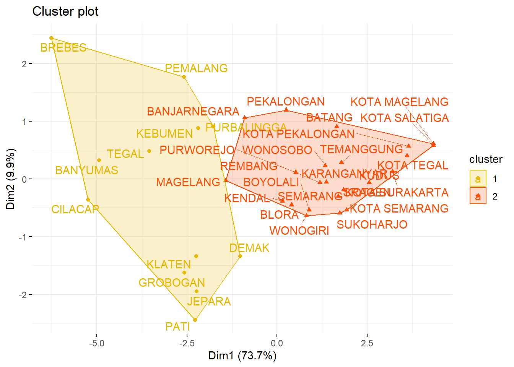
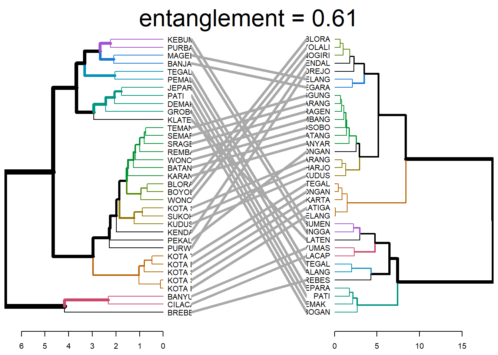
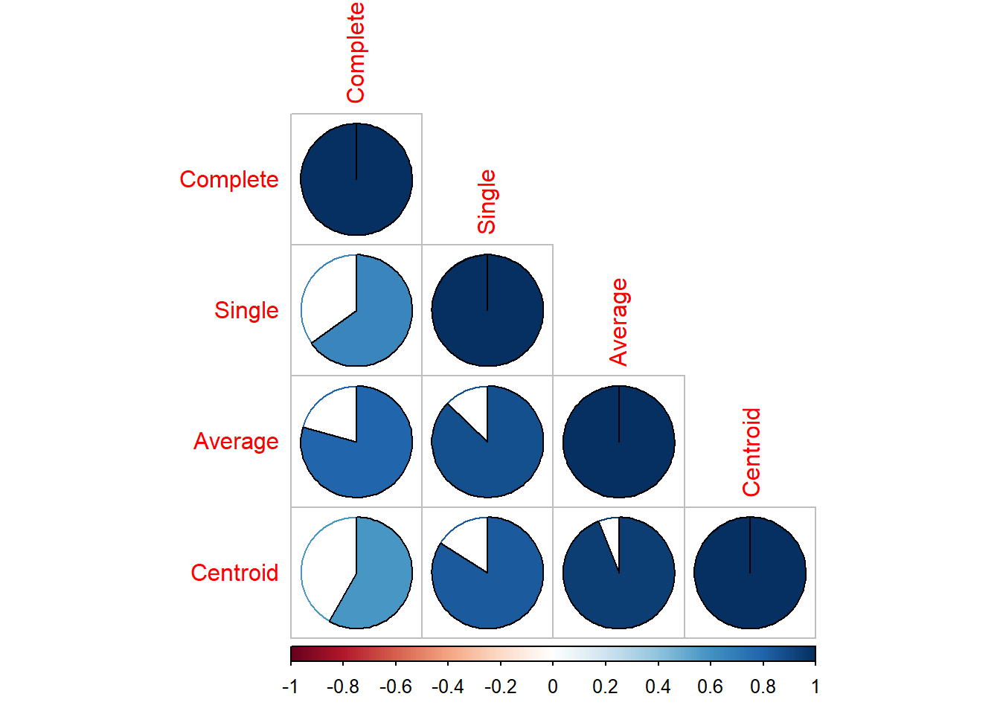
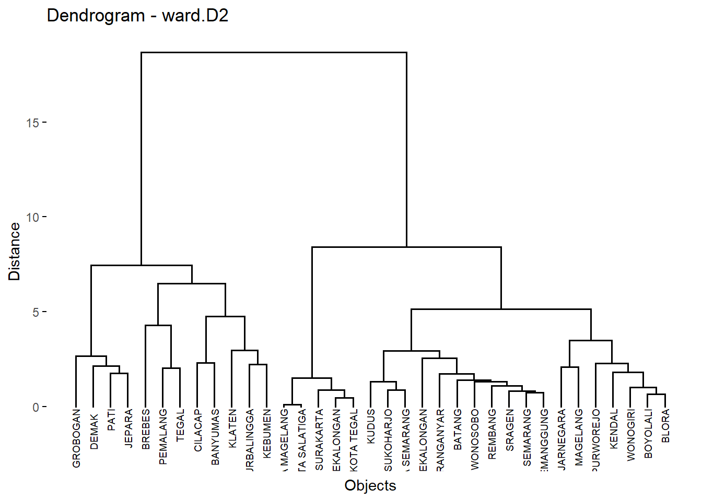
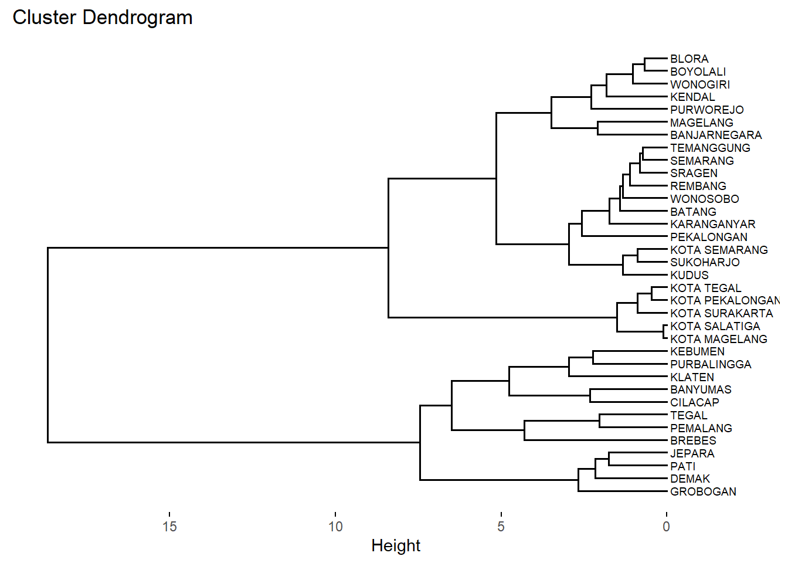
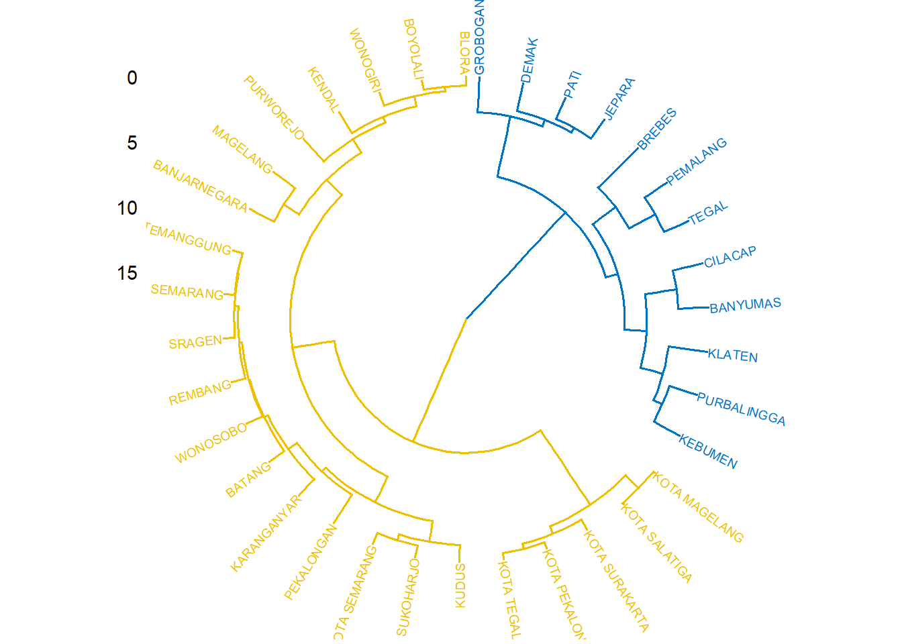
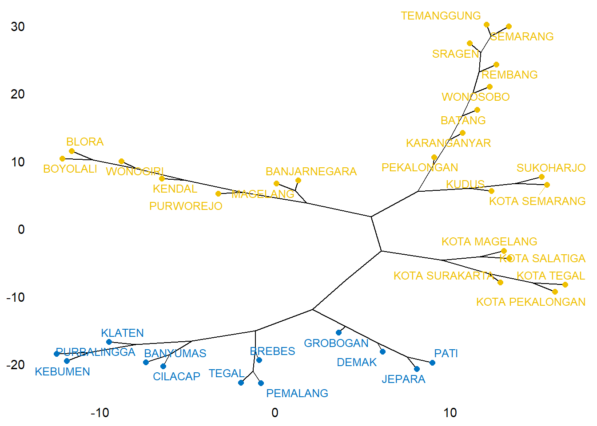
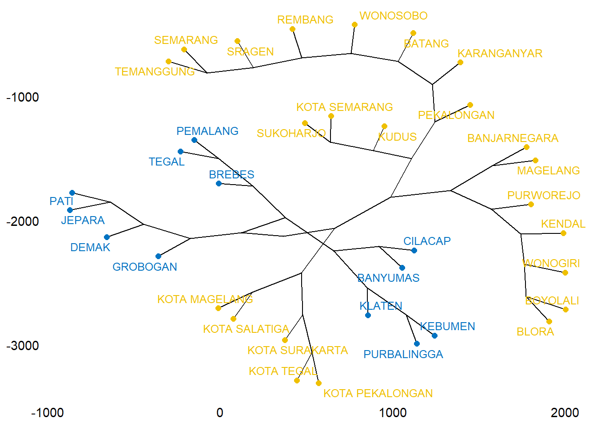

4 Metode Cluster Hirarki
4.1 Data
library (readr)
urlfile = "https://raw.githubusercontent.com/dedenistiawan/Dataset/main/Basis%20Data%20Terpadu%20Jateng.csv"
data<-read.csv(url(urlfile), row.names = "Kabupaten")| X1 | X2 | X3 | X4 | X5 | X6 | X7 | X8 | X9 | X10 | |
|---|---|---|---|---|---|---|---|---|---|---|
| CILACAP | 5.19 | 5.67 | 5.08 | 5.44 | 5.22 | 6.05 | 11.47 | 9.78 | 5.55 | 5.12 |
| BANYUMAS | 5.71 | 4.47 | 5.18 | 5.51 | 5.02 | 6.21 | 7.39 | 6.96 | 5.98 | 8.22 |
| PURBALINGGA | 3.30 | 2.19 | 3.80 | 3.13 | 3.73 | 3.34 | 8.71 | 7.41 | 3.21 | 4.65 |
| BANJARNEGARA | 2.73 | 2.34 | 3.76 | 2.80 | 2.57 | 2.99 | 3.31 | 5.45 | 4.21 | 6.05 |
| KEBUMEN | 4.17 | 2.55 | 3.26 | 4.16 | 3.15 | 4.15 | 4.30 | 9.29 | 4.61 | 4.34 |
| PURWOREJO | 1.87 | 2.12 | 1.48 | 3.05 | 1.78 | 1.83 | 5.00 | 4.90 | 3.12 | 2.09 |
| WONOSOBO | 2.13 | 1.95 | 3.00 | 1.78 | 1.62 | 2.06 | 0.45 | 2.32 | 3.57 | 0.84 |
| MAGELANG | 3.95 | 3.01 | 4.22 | 4.15 | 3.01 | 3.64 | 1.44 | 3.35 | 5.69 | 3.67 |
| BOYOLALI | 2.19 | 3.07 | 1.61 | 2.74 | 2.11 | 1.82 | 1.71 | 2.34 | 3.41 | 1.55 |
| KLATEN | 3.84 | 5.15 | 1.93 | 4.64 | 4.04 | 3.78 | 8.71 | 4.45 | 3.99 | 3.09 |
# Compute the dissimilarity matrix
# df = the standardized data
res.dist <- dist(df, method = "euclidean")## CILACAP BANYUMAS PURBALINGGA BANJARNEGARA KEBUMEN
## CILACAP 0.000000 2.327193 3.828424 5.188508 3.891360
## BANYUMAS 2.327193 0.000000 3.809719 4.232529 3.310710
## PURBALINGGA 3.828424 3.809719 0.000000 2.418211 2.235801
## BANJARNEGARA 5.188508 4.232529 2.418211 0.000000 2.159694
## KEBUMEN 3.891360 3.310710 2.235801 2.159694 0.000000## Loading required package: ggplot2## Welcome! Want to learn more? See two factoextra-related books at https://goo.gl/ve3WBa
## CILACAP BANYUMAS
## 1 1## grp
## 1 2
## 12 23# Cut in 2 groups and color by groups
fviz_dend(res.hc, k =2, # Cut in four groups
cex = 0.5, # label size
k_colors = c("#E7B800", "#FC4E07"),
color_labels_by_k = TRUE, # color labels by groups
rect = TRUE # Add rectangle around groups)
)
fviz_cluster(list(data = df, cluster = grp),
palette = c("#E7B800", "#FC4E07"),
ellipse.type = "convex", # Concentration ellipse
repel = TRUE, # Avoid label overplotting (slow)
show.clust.cent = FALSE, ggtheme = theme_minimal())
4.2 Comparing dendrograms
##
## ---------------------
## Welcome to dendextend version 1.17.1
## Type citation('dendextend') for how to cite the package.
##
## Type browseVignettes(package = 'dendextend') for the package vignette.
## The github page is: https://github.com/talgalili/dendextend/
##
## Suggestions and bug-reports can be submitted at: https://github.com/talgalili/dendextend/issues
## You may ask questions at stackoverflow, use the r and dendextend tags:
## https://stackoverflow.com/questions/tagged/dendextend
##
## To suppress this message use: suppressPackageStartupMessages(library(dendextend))
## ---------------------##
## Attaching package: 'dendextend'## The following object is masked from 'package:stats':
##
## cutree# Compute distance matrix
res.dist <- dist(df, method = "euclidean")
# Compute 2 hierarchical clusterings
hc1 <- hclust(res.dist, method = "average")
hc2 <- hclust(res.dist, method = "ward.D2")
# Create two dendrograms
dend1 <- as.dendrogram (hc1)
dend2 <- as.dendrogram (hc2)
# Create a list to hold dendrograms
dend_list <- dendlist(dend1, dend2)
tanglegram(dend1, dend2,
highlight_distinct_edges = FALSE, # Turn-off dashed lines
common_subtrees_color_lines = FALSE, # Turn-off line colors
common_subtrees_color_branches = TRUE, # Color common branches
main = paste("entanglement =", round(entanglement(dend_list), 2))
)
# Create multiple dendrograms by chaining
dend1 <- df %>% dist %>% hclust("complete") %>%as.dendrogram
dend2 <- df %>% dist %>% hclust("single") %>%as.dendrogram
dend3 <- df %>% dist %>% hclust("average") %>%as.dendrogram
dend4 <- df %>% dist %>% hclust("centroid") %>%as.dendrogram
# Compute correlation matrix
dend_list <- dendlist("Complete" = dend1, "Single" = dend2,
"Average" = dend3, "Centroid" = dend4)
cors <- cor.dendlist(dend_list)
# Print correlation matrix
round(cors, 2)## Complete Single Average Centroid
## Complete 1.00 0.65 0.79 0.58
## Single 0.65 1.00 0.87 0.84
## Average 0.79 0.87 1.00 0.94
## Centroid 0.58 0.84 0.94 1.00## corrplot 0.92 loaded
# Compute distances and hierarchical clustering
dd <- dist(scale(data), method = "euclidean")
hc <- hclust(dd, method = "ward.D2")
fviz_dend(hc, cex = 0.5,
main = "Dendrogram - ward.D2",
xlab = "Objects", ylab = "Distance", sub = "")

fviz_dend(hc, k =2,
# Cut in four groups
cex = 0.5,
# label size
k_colors = c("#E7B800", "#FC4E07"),
color_labels_by_k = TRUE, # color labels by groups
ggtheme = theme_gray()
# Change theme
)

fviz_dend(hc, k =2, cex = 0.4, horiz = TRUE, k_colors = "jco",
rect = TRUE, rect_border = "jco", rect_fill = TRUE)

## Loading required package: igraph##
## Attaching package: 'igraph'## The following objects are masked from 'package:stats':
##
## decompose, spectrum## The following object is masked from 'package:base':
##
## union
require("igraph")
fviz_dend(hc, k =2, # Cut in four groups
k_colors = "jco",
type = "phylogenic", repel = TRUE,
phylo_layout = "layout.gem")